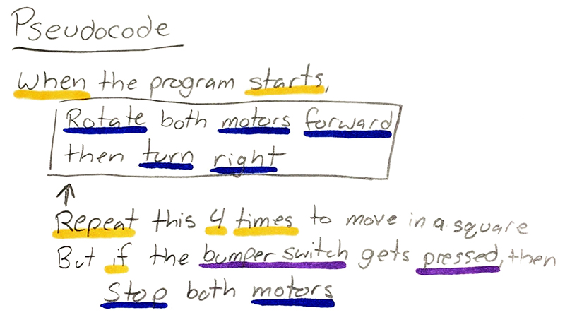

Pseudocode is a computer programming language that resembles plain English that cannot be compiled or executed, but explains a resolution to a problem.
It is a human-readable representation of an algorithm. It is not written the specific syntax of any particular programming language. However, a programmer can easily translate pseudocode to Java because the pseudocode is the algorithm plus any considerations for making it into a program.
There is not a standard format for pseudocode. It tends to be a cross between some of the more widely used programming languages and natural language. Pseudocode can generally be read by programmers who are familiar with different programming languages.
Pseudocode allows one to include all the constructs of the Structure Theorem. Pseudocode can include sequence, selection and repetition as needed to perform the algorithm.
Pseudocode Conventions Statements are written in simple English. Each instruction is written on a separate line. Keywords and indentation are used to signify particular control structures. Each set of instructions is written from top to bottom, with only one entry point and one exit point. >Groups of statements may be grouped into named modules.
An algorithm is the solution to the problem. It presents a well defined sequence of steps that provides a solution for a given problem. Pseudocode represents the algorithm in a format that resembles any programming language. Pseudocode is the algorithm written in terms of the Structure Theorem.
The client or business analyst derive the algorithm. Someone with knowledge of programming derives the pseudocode. The programmer develops the program from the pseudocode. The compiler translates the program into byte code or machine code and the program runs! The client is happy. And the Project Manager takes all the credit.
Example:
Algorithm:
Our local weatherperson tells us how to convert a temperature from Fahrenheit to Celsius. She says to subtract 32 from the Fahrenheit temperature and then multiply that value by 5/9. That's the algorithm.
From that we derive the pseudocode:
Prompt user for fahreheitTemp
Get fahreheitTemp
Calculate celciusTemp = (fahreheitTemp - 32) * 5/9
Display celciusTemp
Which description would you rather have in front of you when you're ready to write a program to convert temperatures? The algorithm or the pseudocode?
Notice that the pseudocode example has made several decisions for the programmer. These include the order of operations, the variable names and the steps to follow.
The programmer can now focus on programming and not the business problem.
Programmers are often asked to develop solutions for problems they do not fully understand. It is unlikely that you are a meteorologist. You wouldn't need to be because that person already figured out the formula and gave you the algorithm. You just have to program it. And the project manager has already told the client you did that yesterday.